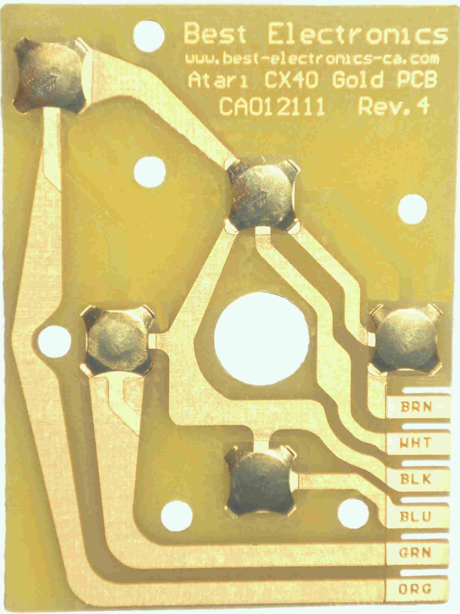

CX24 Joystick upgraded
Atari Reconditioned Atari CX24 Joystick upgraded with Best CX24 lifetime all Gold board set. CX24-RG $29.95
Atari Reconditioned Atari CX24 Joystick upgraded with Best CX24 lifetime all Gold board set. CX24-RG $29.95
The Best Gold 4th Generation / Rev. 4 CX40 PCB board! Essentially the New Best Gold CX40 PCB board should be a lifetime version CX40 Joystick PCB board. The Atari CX40 internal handle will fail before this New 2018 4th generation State of the Art Best CX40 Gold PCB board. After 13+ years of selling the Best CX40 Joystick Gold PCB's World Wide, we have yet to hear of a single Best CX40 Joystick CX40 Gold PCS's that has failed in use. $45.99
Atari CX40 Copper Fire button Trace New Best Gold plated larger contract area CX40 Fire button Trace. $35.99
Atari CX40 Joystick Internal Design! Now shipping 4th generation Best CX40 all Gold PCB boards with even thicker pcb board material and now fully Gold plated dome. $15.99